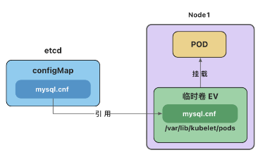

临时卷(EV)
emptyDir
emptyDir 会创建一个初始状态为空的目录，存储空间来自本地的 kubelet 根目录或内存(需要将 emptyDir.medium 设置为"Memory")。
通常使用本地临时存储来设置缓存、保存日志等。
例如，将 redis 的存储目录设置为 emptyDir
apiVersion: v1
kind: Pod
metadata:
name: redis-pod
spec:
containers:
- name: redis
image: redis
volumeMounts:
- name: redis-storage
mountPath: /data/redis
volumes:
- name: redis-storage
emptyDir: {}
configMap 卷和 secret 卷
注意：这里的 configMap 和 secret 代表的是卷的类型，不是 configMap 和 secret 对象。 删除 Pod 并不会删除 ConfigMap 对象和 secret 对象。

# 获取所有临时卷, 但得不到有效信息
$ kubectl get ev
。。。
- 查看临时卷 configMap 有效信息
# 获取pod UID
$ kubectl get pods mysql-pod -o jsonpath='{.metadata.uid}'
f49b79ac-e233-45fb-9928-967a55de6b43#
$ cd /var/lib/kubelet/pods/
$ ls
66b1bd24-e020-4665-9c0a-f00c8d1eb15c 8aff060c-d1e8-4b17-87ff-8a820525cb34 93717d34-0df2-40db-905a-2929ac3e99b4 f49b79ac-e233-45fb-9928-967a55de6b43
# 进入临时卷
$ cd f49b79ac-e233-45fb-9928-967a55de6b43/volumes/kubernetes.io~configmap/conf-volume
# 得到信息
$ cat mysql.cnf
[mysqld]
character-set-server=utf8mb4
collation-server=utf8mb4_general_ci
init-connect='SET NAMES utf8mb4'
[client]
default-character-set=utf8mb4
[mysql]
default-character-set=utf8mb4
- 删除 pod 临时卷也被删除，但 configMap 对象依然存在
$ cd /var/lib/kubelet/pods
$ ls
66b1bd24-e020-4665-9c0a-f00c8d1eb15c 8aff060c-d1e8-4b17-87ff-8a820525cb34 93717d34-0df2-40db-905a-2929ac3e99b4 f49b79ac-e233-45fb-9928-967a55de6b43
$ kubectl delete pod mysql-pod
pod "mysql-pod" deleted
# 被删除
$ ls
66b1bd24-e020-4665-9c0a-f00c8d1eb15c 8aff060c-d1e8-4b17-87ff-8a820525cb34 93717d34-0df2-40db-905a-2929ac3e99b4
# 看到configMap 依然存在
$ kubectl get cm
NAME DATA AGE
kube-root-ca.crt 1 69m
mysql-config 1 52m
参考文档：
https://kubernetes.io/zh-cn/docs/concepts/storage/volumes/
https://kubernetes.io/zh-cn/docs/concepts/storage/ephemeral-volumes/
https://kubernetes.io/zh-cn/docs/tasks/configure-pod-container/configure-volume-storage/